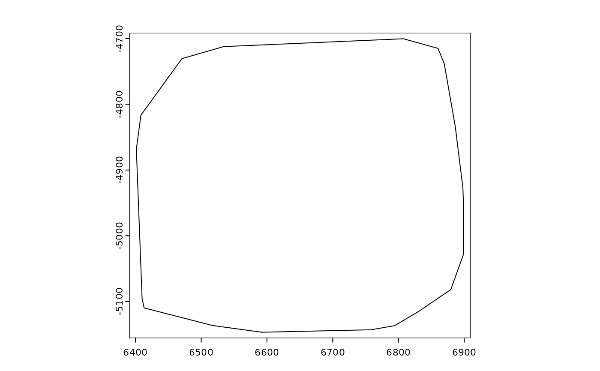
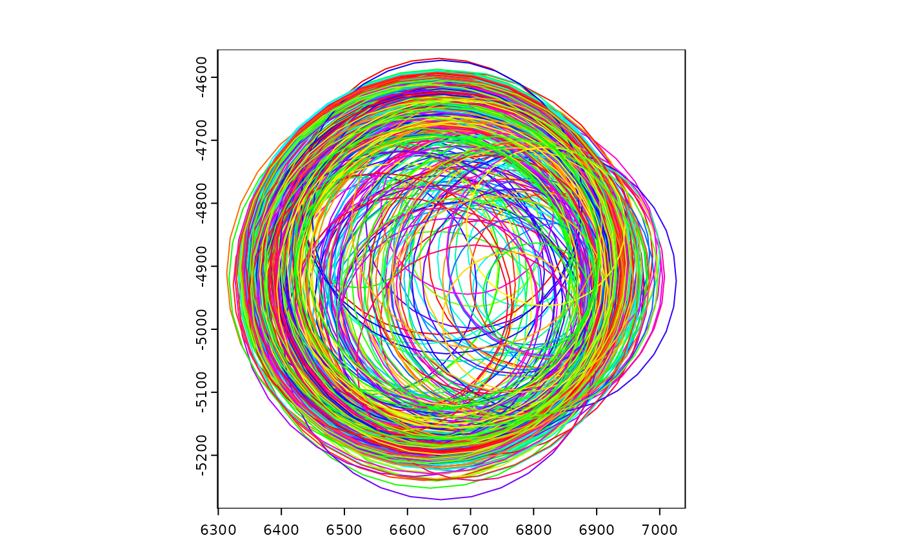
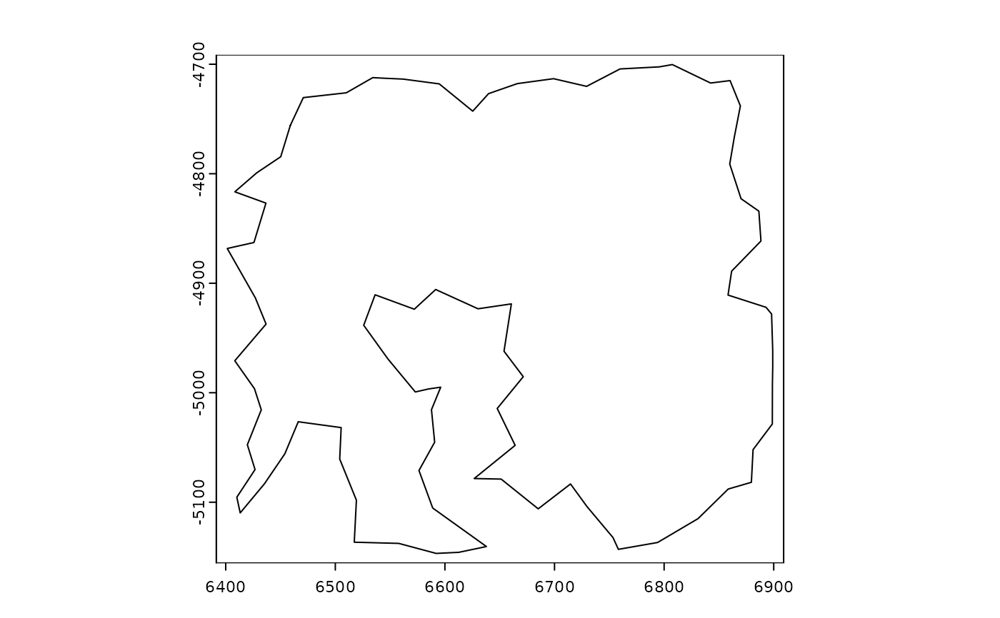

Compute a hull around Giotto spatial object or terra SpatVector. The concaveness of the concave hull can be specified in different ways.
Usage
# S4 method for class 'spatLocsObj'
hull(x, by = "", param = 1, allowHoles = TRUE, tight = TRUE, ...)
# S4 method for class 'giottoSpatial'
hull(x, by = "", param = 1, allowHoles = TRUE, tight = TRUE, ...)
minRect(x, ...)
minCircle(x, ...)
convHull(x, ...)Arguments
- x
any of giotto image, giottoPolygon, giottoPoints, spatLocsObj, SpatVector
- by
character (variable name), to get a new geometry for groups of input geometries
- param
numeric between 0 and 1. For the "concave_*" types only. For
type="concave_ratio"this is The edge length ratio value, between 0 and 1. Fortype="concave_length"this the maximum edge length (a value > 0). Fortype="concave_polygons"thism specifies the maximum Edge Length as a fraction of the difference between the longest and shortest edge lengths between the polygons. This normalizes the maximum edge length to be scale-free. A value of 1 produces the convex hull; a value of 0 produces the original polygons- allowHoles
logical. May the output polygons contain holes? For "concave_*" methods only
- tight
logical. Should the hull follow the outer boundaries of the input polygons? For "concave_length" with polygon geometry only
- ...
Arguments passed on to
terra::hull
Examples
sl <- GiottoData::loadSubObjectMini("spatLocsObj")
gpoints <- GiottoData::loadSubObjectMini("giottoPoints")
h <- hull(sl)
plot(h)

r <- hull(sl, type = "rectangle")
plot(r)
circ <- hull(gpoints, type = "circle", by = "feat_ID")
plot(circ, border = rainbow(100))

plot(hull(sl, type = "concave_ratio", param = 0.15, allowHoles = FALSE))
